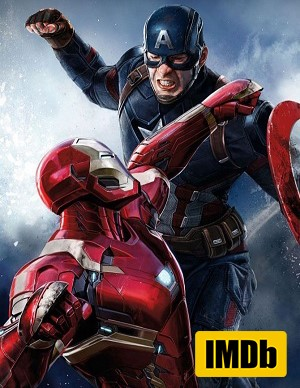
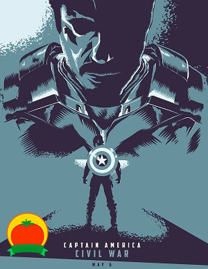

Ficha técnica
Sinopsis
Captain America: Civil War empieza donde lo dejó Avengers: Age of Ultron, ya que Steve Rogers lidera el nuevo equipo de los Vengadores en su incesante tarea de proteger a la humanidad.Después de que otro incidente internacional en el que se ven envueltos los Vengadores produzca daños colaterales, la presión política obliga a poner en marcha un sistema para depurar responsabilidades y un organismo rector que determine cuándo hay que recurrir a los servicios del equipo.
El nuevo status quo divide a los Vengadores mientras intentan proteger al mundo de un nuevo malvado.
Crítica
¡Entrá a IMDb y analizá todas las críticas!
Planilla
Dirección: Anthony Russo y Joe RussoProducción Kevin Feige
Guion Christopher Markus y Stephen McFeely
Basada en: Captain America, de Joe Simon y Jack Kirby
Música: Henry Jackman
Fotografía: Trent Opaloch
Montaje: Jeffrey Ford y Matthew Schmidt
Vestuario: Judianna Makovsky
Estreno: 6 de mayo de 2016
Duración: 147 minutos
Presupuesto: U$D 250.000.000
Crítica
¡Entrá a Rotten Tomatoes y analizá todas las críticas!